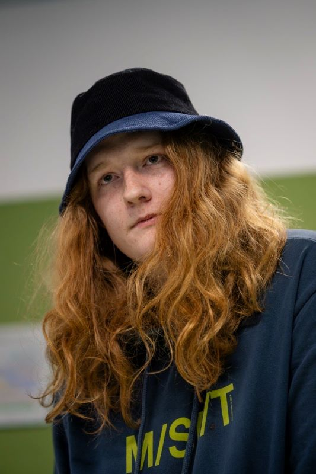
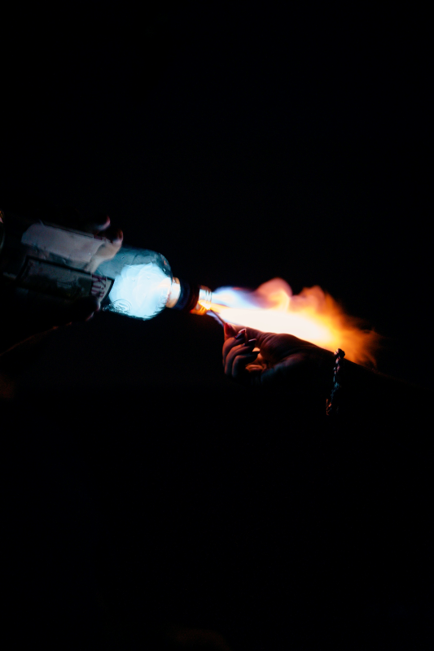
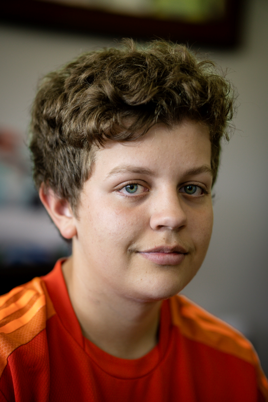
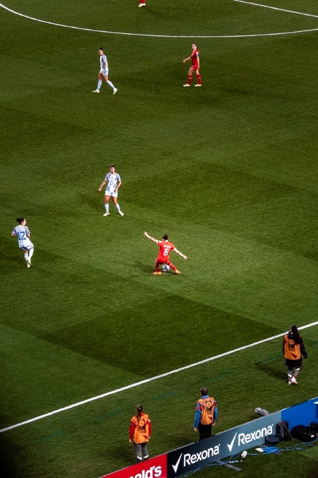

|  |  |
| Fire Man | Combustion |
| portrait of a man in school | a highly alcoholic drink that was set on fire |
| gap | |
|  |  |
| Werner Bros | Kicking for gold |
| a teenager named werner after having watched the football world cup | spain doing a cross pass to score against argentina |